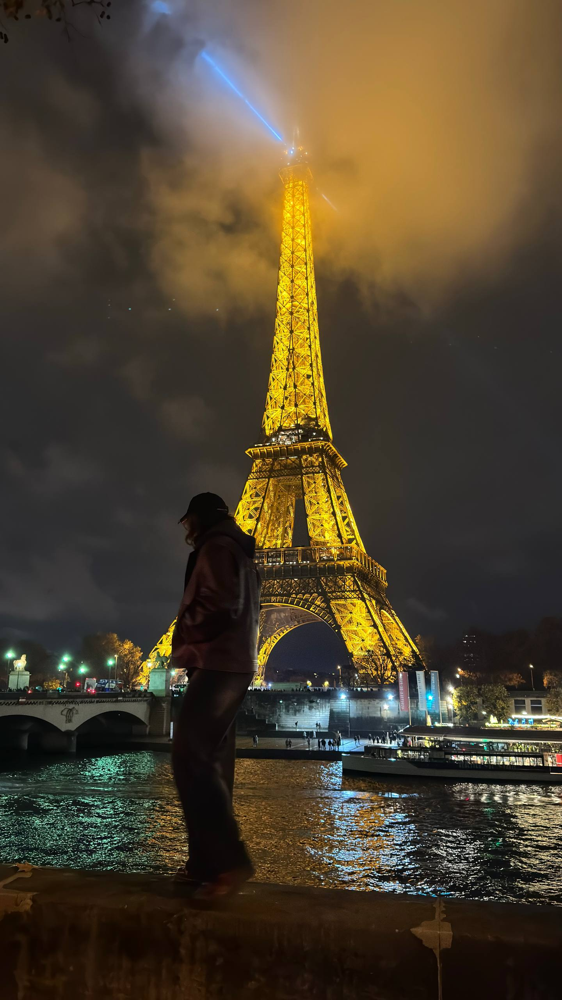

O mne

Volám sa Denys Ivanenko a študujem aplikovanú informatiku na Fakulte elektrotechniky a informatiky STU v Bratislave. Pochádzam z Ukrajiny a mojím cieľom je stať sa žiadaným odborníkom v oblasti IT.
Vo voľnom čase rád cestujem a spoznávam nové miesta. Zaujímam sa aj o fotografiu a hudbu. Pri tvorbe tejto stránky si upevňujem vedomosti získané na prednáškach a pri riešení zadaní z predmetu Webové technológie.